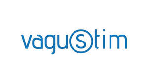

Trade Mark Journal No.2025/046 14 November 2025
UK00004289901 5 November 2025 (10,35,44)

- Class 10
- Surgical, medical, dental and veterinary apparatus and instruments; furniture especially made for medical purposes; artificial limbs and prostheses; medical orthopaedic articles: corsets for medical purposes, orthopaedic shoes, elastic bandages and supportive bandages; surgical gowns and surgical sterile sheets; adult sexual aids; condoms; babies’ bottles; babies’ pacifiers; teats; gum massagers for babies; bracelets and rings for medical purposes, anti-rheumatism bracelets; anti-rheumatism rings; nerve stimulators.
- Class 35
- Advertising, marketing and public relations; organization of exhibitions and trade fairs for commercial or advertising purposes; development of advertising concepts; provision of an online marketplace for buyers and sellers of goods and services; Office functions; secretarial services; arranging newspaper subscriptions for others; compilation of statistics; rental of office machines; systemization of information into computer databases; telephone answering for unavailable subscribers; Business management, business administration and business consultancy; accounting; commercial consultancy services; personnel recruitment, personnel placement, employment agencies, import-export agencies; temporary personnel placement services; Auctioneering; The bringing together, for the benefit of others, of a variety of goods, namely, surgical, medical, dental and veterinary apparatus and instruments, furniture especially made for medical purposes, artificial limbs and prostheses, medical orthopaedic articles, corsets for medical purposes, orthopaedic shoes, elastic bandages and supportive bandages, surgical gowns and surgical sterile sheets, adult sexual aids, condoms, babies’ bottles, babies’ pacifiers, teats, gum massagers for babies, bracelets and rings for medical purposes, anti-rheumatism bracelets, anti-rheumatism rings, nerve stimulators, enabling customers to conveniently view and purchase those goods, such services may be provided by retail stores, wholesale outlets, by means of electronic media or through mail order catalogues.
- Class 44
- Medical services; beauty care services; veterinary services; animal husbandry; animal breeding; shoeing horses [farrier services]; agriculture, horticulture and forestry services; landscape design services; medical advisory services in the field of personnel health.
VAGUSTİM SAĞLIK TEKNOLOJİLERİ ANONİM ŞİRKETİ
Representative: SMYRNA LTD